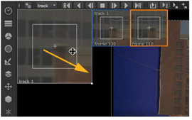
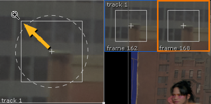

要计算关键帧轨迹:
| 1。 | 在 “跟踪器属性” 面板中，选择要在轨迹列表中计算的每个轨迹，或单击 选择全部 . |
| 2. | 对于每个轨迹，选择轨迹要输出的运动类型: 平移、旋转或缩放。例如，跨序列和向相机跟踪特征可能涉及平移和缩放。 |
| 3. | 将该序列擦洗几帧，并通过将锚点拖动到图案的位置来调整跟踪锚点的位置。您可以使用 “缩放” 窗口微调定位。根据需要继续执行序列。 |

提示:
您可以通过按住来更改缩放窗口的放大倍数
转变
并将放大镜光标从窗口中心拖动。

在每一帧，一个新的关键帧窗口被添加到缩放窗口的右侧。最接近当前播放头帧的关键帧以橙色突出显示。
在复杂或更大的运动区域周围放置更多的关键帧是一个好主意，在直接翻译上放置更少的关键帧。一般来说，更多的关键帧会产生更好的跟踪，但会牺牲处理时间。
| 4. |
当你对你的关键帧满意时，确保你的所有曲目都在
轨道
列表，然后单击
|
提示: 当同时计算多个轨道时，您可能会发现一些轨道准确地坚持模式，而其他轨道需要重置和重新分析。当你对给定的轨道感到满意时，在 轨道 列表。这可以保护它免受重新计算，并让您尝试更好地放置任性的轨道。
| 5. |
您还可以通过单击来强制选定的轨迹在最近的两个关键帧之间重新计算
|
请参阅 关键帧轨迹故障排除 为麻烦的轨道提供帮助。
|
|